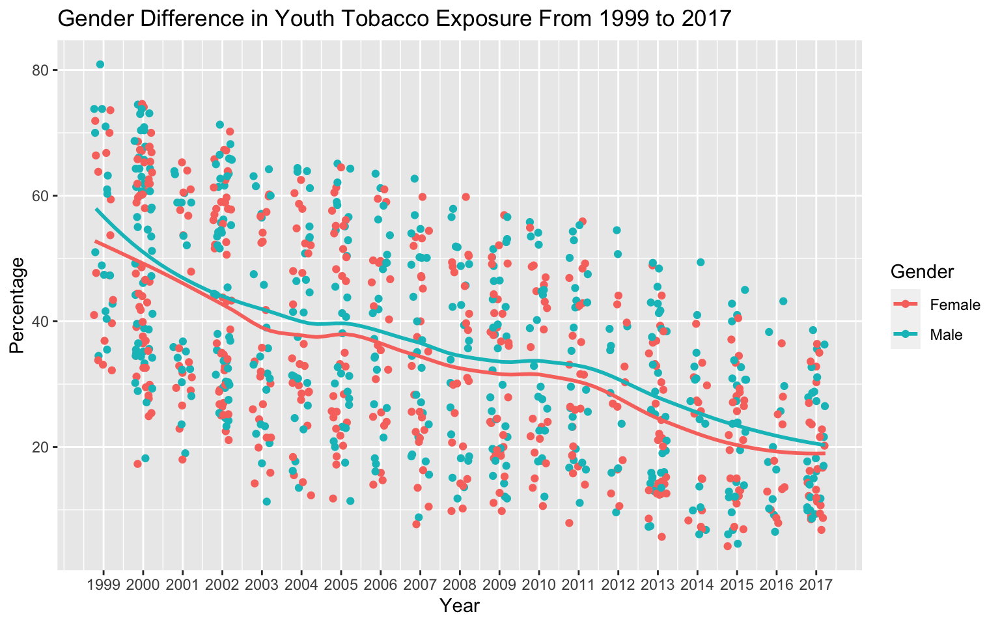
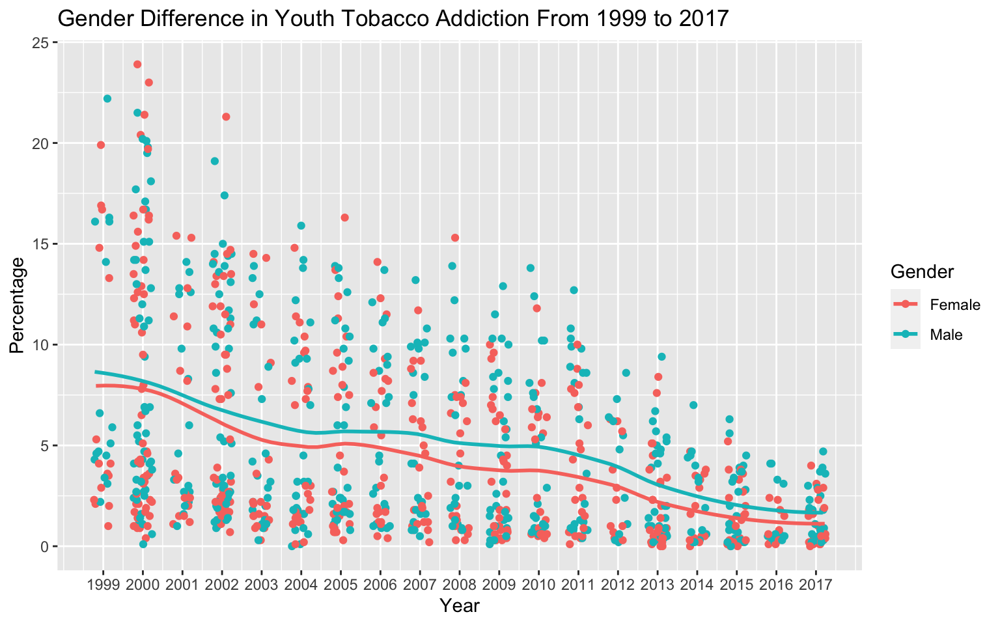
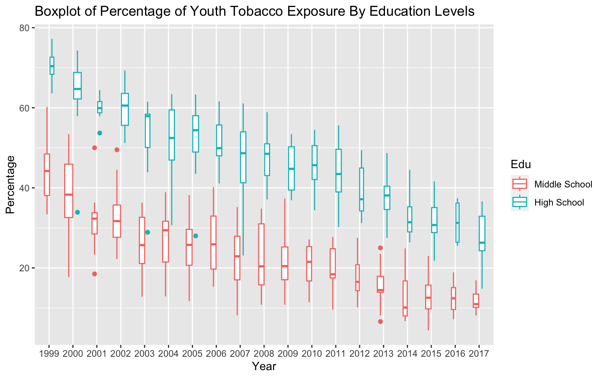
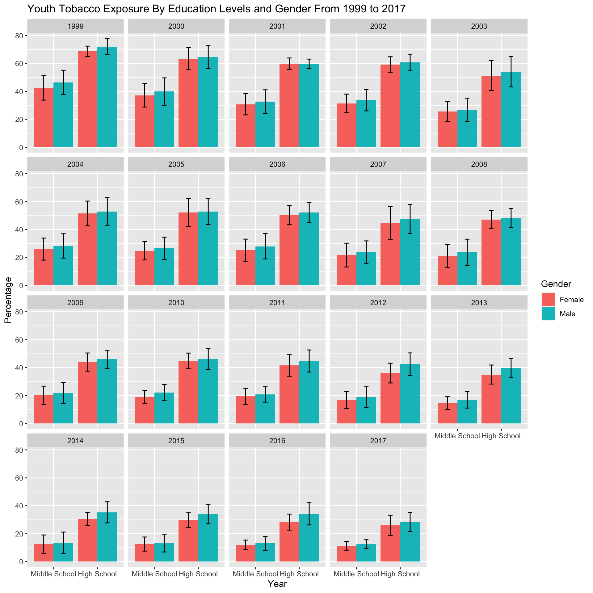
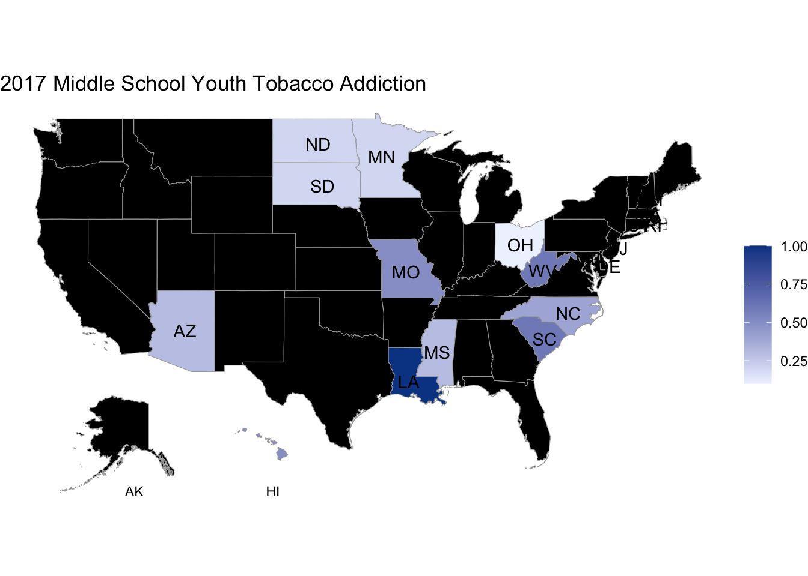
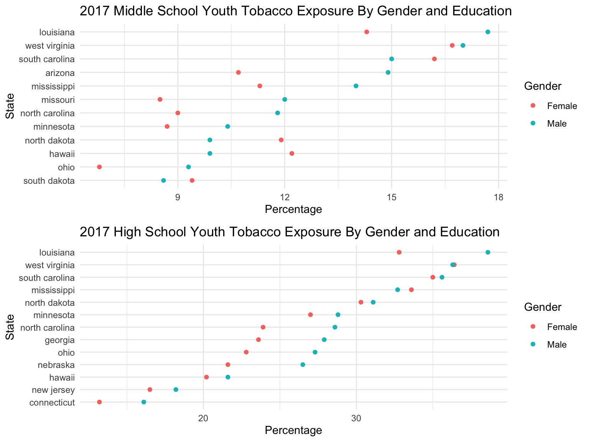
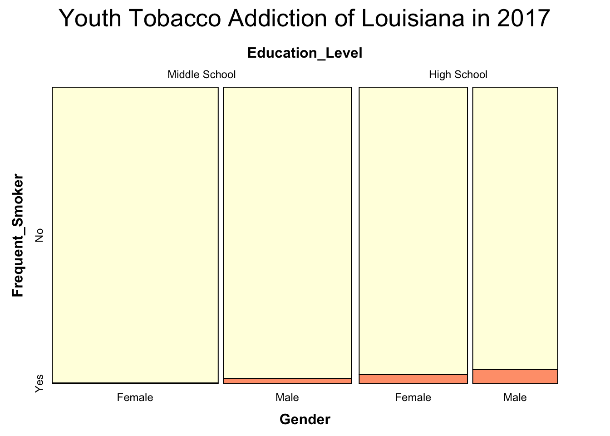

In this section, we will begin by introducing the variables used for analysis. Subsequently, we will delve into a discussion on youth tobacco exposure and addiction rates, considering variations over time, across states, and differences in gender and education levels.
3.0.1 Data Processing
We will continue to use variables mentioned previously.
Dependent variable:
Value : the percentage of students who share the same smoking status among the entire student population with similar features
Independent variable:
YEAR: Year of the observation
State: Location of the observation
Topic: Type of tobacco consumption(Cigarette/ Smokeless Tobacco/ Cessation)
Measure: Smoking Status (Smoking/ Quit Attemp)
Res: Frequency of tobacco usage (Ever/ Current/ Frequent)
Sample: sample size
Edu: Education background of the observation (Middle School/ High School)
Gender: Female/ Male/ Overall
Code
# Impart Packages library(readr)library(tidyverse)library(ggplot2)library(choroplethr)library(dplyr)library(plotly)library(cowplot)library(vcd)library(choroplethrMaps)# Import Dataset data <-read_csv("https://raw.githubusercontent.com/yutongzhang37/tobacco/main/Data/Youth_Tobacco_Survey__YTS__Data.csv")# We now remove variables with single observationdata <-Filter(function(x)(n_distinct(x)>1), data)# use only the independent and dependent variable mentioned previouslydata_bf <-subset(data, select =c("YEAR", "LocationDesc", "TopicDesc", "MeasureDesc", "Response","Data_Value","Sample_Size", "Gender", "Education"))# Rename variablesdata_bf <- data_bf %>%rename(State = LocationDesc,Topic = TopicDesc,Measure = MeasureDesc,Sample = Sample_Size,Edu = Education,Res = Response,Value = Data_Value)# order ordinal categorydata_bf$Edu <-factor(data_bf$Edu, levels =c("Middle School", "High School"))
3.0.2 How did patterns of youth tobacco exposure and addiction evolve from 1999 to 2017 ?
To address this question, we will initially examine the overall trends in youth tobacco exposure and addiction from 1999 to 2017. Subsequently, we will explore potential variations in these patterns based on gender and education levels. Our specific focus will be on the percentage of students who had ever smoked (youth tobacco exposure) and the percentage of students who had smoked frequently (youth tobacco addiction).
Overall Trends in Youth Tobacco Exposure and Addiction
Tobacco Exposure
To assess trends in youth tobacco exposure rates, we analyzed the reported percentage of students who had smoked before each year. The accompanying boxplots demonstrate a clear decreasing trend in the percentage of youth tobacco exposure from 1999 to 2017. The median declined from approximately 50% in 1999 to below 20% in 2017, with consistently stable variance in data each year. The similar size of the boxplots across years suggests a consistent number of observations annually.
Code
# Filter dataset data1 <- data_bf %>%filter( Topic =="Cigarette Use (Youth)"& Gender =="Overall"& Res =="Ever")# Treat Year as factors data_y <- data1data_y$YEAR <-factor(data_y$YEAR)# Plot Boxplotggplot(data_y, aes(YEAR, Value)) +geom_boxplot(varwidth =TRUE, fill ='#FFA07A') +ggtitle("Boxplot: Percentage of Youth Tobacco Exposure from 1999 to 2017")+ylab("Percentage")+xlab("Year")
Tobacco Addiction
Similarly, to examine changes in the percentage of youth addicted to tobacco from 1999 to 2017, we focused on the reported percentage of students who smoked more than 20 days out of 30 before the survey. The accompanying boxplot indicates a decreasing trend in the percentage of youth tobacco addiction during this period. While the median of the youth tobacco addiction rate decreased from around 5% to approximately 1% from 1999 to 2017, the upper quartile decreased from roughly 15% to 5%. This observation suggests significant improvements have been noted in areas with historically high youth tobacco addiction rates over the past two decades.
Code
# filter datadata2 <- data_bf %>%filter( Topic =="Cigarette Use (Youth)"& Gender =="Overall"& Res =="Frequent")# Treat Year as factors data_y2 <- data2data_y2$YEAR <-factor(data_y2$YEAR)# Plot Boxplotggplot(data_y2, aes(YEAR, Value)) +geom_boxplot(varwidth =TRUE, fill ='#FFA07A') +ggtitle("Boxplot: Percentage of Youth Tobacco Addiction from 1999 to 2017")+ylab("Percentage")+xlab("Year")
Variation of Trends in Genders
We are also interested in the evolution of youth tobacco exposure rate and addiction rate when considering gender.
Tobacco Exposure
We now grouped the data by year and gender to observe the reported tobacco exposure rates for different genders in different years. The graph below illustrates a clear decreasing trend for both female and male youth tobacco exposure rates from 1999 to 2017, confirming our earlier findings. Furthermore, the smooth line indicates a consistent gap between male and female youth tobacco exposure rates across years, suggesting that the male population consistently has relatively higher youth tobacco exposure rates.
Code
# filter datadata_ge <- data_bf %>%filter( Topic =="Cigarette Use (Youth)"& Gender !="Overall"& Res =="Ever")ggplot(data_ge, aes(x =jitter(YEAR,1.2), y = Value, color = Gender)) +geom_point()+geom_smooth(method ="loess", span = .4, se =FALSE)+scale_x_continuous(breaks =seq(1999,2017,1))+xlab("Year")+ylab("Percentage")+ggtitle("Gender Difference in Youth Tobacco Exposure From 1999 to 2017")

Tobacco Addiction
As in our previous analysis, we grouped the data by year and gender. The graph shows a decreasing trend in youth tobacco addiction rates for both genders across the years, consistent with our earlier findings. Notably, a consistent gap is observed between male and female tobacco addiction rates across all years, with the male population consistently exhibiting higher rates.
Code
data_gf <- data_bf %>%filter( Topic =="Cigarette Use (Youth)"& Gender !="Overall"& Res =="Frequent")ggplot(data_gf, aes(x =jitter(YEAR,1.2), y = Value, color = Gender)) +geom_point()+geom_smooth(method ="loess", span = .4, se =FALSE)+scale_x_continuous(breaks =seq(1999,2017,1))+xlab("Year")+ylab("Percentage")+ggtitle("Gender Difference in Youth Tobacco Addiction From 1999 to 2017")

Variation of Trends by Education Level
In this section, we will examine youth tobacco exposure and addiction rates separately for middle school and high school across different years.
Tobacco Exposure
While both middle school and high school youth tobacco exposure rates exhibit clear decreasing trends in the graph, high school students consistently demonstrate significantly higher tobacco exposure rates. The median high school tobacco exposure rate decreased from 70% to approximately 25% between 1999 and 2017, whereas the median middle school tobacco exposure rate decreased from around 45% to 10% during the same period. Throughout all years, high school students consistently maintain much higher median tobacco exposure rates. Additionally, the boxplots share a similar size, indicating a comparable number of observations in each year and education level.
Code
data_y1 <- data1data_y1$YEAR <-factor(data_y1$YEAR)ggplot(data_y1, aes(YEAR, Value, color = Edu)) +geom_boxplot(varwidth =TRUE) +#facet_grid(Edu~.)+ggtitle("Boxplot of Percentage of Youth Tobacco Exposure By Education Levels")+ylab("Percentage")+xlab("Year")

Tobacco Addiction
In exploring youth tobacco addiction rates, we observed decreasing trends in both education levels. High school students exhibited a median tobacco addiction rate of around 16% in 1999, which decreased to approximately 2.5% in 2017. In contrast, middle school displayed significantly lower youth tobacco addiction rates over the years, declining from around 4% to almost 0% during the same period. It is evident that high school consistently maintains much higher tobacco addiction rates than middle school across all years.
Code
data_y2 <- data2data_y2$YEAR <-factor(data_y2$YEAR)ggplot(data_y2, aes(YEAR, Value,color = Edu)) +geom_boxplot(varwidth =TRUE) +#facet_grid(Edu~., scales = 'free_y')+ggtitle("Boxplot of Percentage of Youth Tobacco Addiction By Education")+ylab("Percentage")+xlab("Year")
Considering Both Genders and Education Levels
Building upon our previous analysis, it became evident that both gender and education level influence youth tobacco exposure and addiction rates. In an effort to gain a deeper understanding of the patterns across years, we have introduced controls for both gender and education. The dataset was segmented based on education levels and gender, allowing us to calculate the mean and standard deviation of the observed percentages of youth tobacco exposure and addiction rates.
Tobacco Exposure
Faceting on years, we observe a clear declining trend in youth tobacco exposure from 1999 to 2017, confirming our previous findings. Additionally, a notable distinction emerges between middle school and high school average tobacco exposure rates, with middle school rates consistently around half of those in high school across all years. While gender differences in tobacco exposure rates are relatively minor, the graph indicates that males consistently exhibit higher youth tobacco exposure rates when controlling for year and educational levels.
Code
data_avegee <- data_ge %>%group_by(YEAR,Edu, Gender) %>%summarise(ave_p =mean(Value), std =sd(Value))ggplot(data_avegee, aes(x = Edu, y = ave_p, fill= Gender))+geom_col(position ="dodge")+geom_errorbar(aes(ymin = ave_p - std, ymax = ave_p + std),position =position_dodge(.9),width = .2 )+facet_wrap(vars(YEAR))+xlab("Year")+ylab("Percentage")+ggtitle("Youth Tobacco Exposure By Education Levels and Gender From 1999 to 2017")

Tobacco Addiction
Youth tobacco addiction rates also exhibit a distinct decreasing pattern across years, controlling for gender and education level. The disparity between middle school and high school addiction rates is striking, with the middle school average consistently remaining below 5% (from around 5% to almost 0%), while high school tobacco addiction rates dropped from around 17% to 2.5% from 1999 to 2017. Additionally, gender differences in tobacco addiction are noticeable in both middle school and high school across the years. However, compared to education level differences, gender differences are less prominent in tobacco addiction rates.
Code
data_avegef <- data_gf %>%group_by(YEAR,Edu, Gender) %>%summarise(ave_p =mean(Value), std =sd(Value))ggplot(data_avegef, aes(x = Edu, y = ave_p, fill= Gender))+geom_col(position ="dodge")+geom_errorbar(aes(ymin = ave_p - std, ymax = ave_p + std),position =position_dodge(.9),width = .2 )+facet_wrap(vars(YEAR))+xlab("Year")+ylab("Percentage")+ggtitle("Youth Tobacco Addiction By Education Levels and Gender From 1999 to 2017")
Summary
Youth tobacco exposure and addiction rates both exhibited a significant decrease from 1999 to 2017.
Male youth tobacco exposure and addiction rate is consistently higher than female youth tobacco exposure and addiction rates across all years
High school students consistently maintained markedly higher tobacco exposure and addiction rates than middle school students over the past two decades, although as high school rates experienced a notable decline.
Controlling for both gender and education level, education level exerts a stronger impact on youth tobacco exposure and addiction rates than gender.
3.0.3 How does youth tobacco exposure and addiction differ by states in 2017?
To address this question, we will initially examine youth tobacco exposure and addiction rates across states, controlling for education levels. Subsequently, we will explore gender and education level differences within each state. Only a subset of states has data in 2017 is included in this analysis.
Youth Tobacco Exposure and Addiction Rates Across States By Education
We controlled for education levels to create a choropleth maps since the dataset contains varied observations across different levels of education. States lacking the relevant data are represented by the color black on the choropleth map. The deeper shade of blue indicates that this state has a higher percentage of youth tobacco exposure.
Tobacco Exposure
Middle School
West Virginia, Louisiana, and South Carolina exhibit a higher percentage of middle school youth who have previously engaged in smoking, with an approximate rate of 16%. Ohio reports the lowest rate of 8% for tobacco exposure in middle school youth.
Code
# filter datadata2017 <-subset(data_bf, YEAR ==2017)data2017 <- data2017 |>mutate(State =tolower(State)) |>rename(region = State, value = Value)exposure <- data2017 |>filter(Topic =="Cigarette Use (Youth)"& Res =="Ever") |>select(region, value, Gender, Edu)exposure_middle <- exposure |>filter(Gender =="Overall"& Edu =="Middle School") |>select(region, value)exposure_high <- exposure |>filter(Gender =="Overall"& Edu =="High School") |>select(region, value)# choropleth mapsuppressWarnings({state_choropleth(exposure_middle, num_colors =1, title ="2017 Middle School Youth Tabacco Exposure") +annotate("text", x =-104, y =23, label ="HI", color ="black", size =3) +annotate("text", x =-116, y =23, label ="AK", color ="black", size =3)})
High School
Consistently, West Virginia, Louisiana, and South Carolina also exhibit higher percentage of tobacco exposure among high school youth, albeit with a notable increase to 35%. Connecticut has a comparatively lower percentage of 15% for tobacco exposure in high school youth.
Code
suppressWarnings({state_choropleth(exposure_high, num_colors =1, title ="2017 High School Youth Tabacco Exposure") +annotate("text", x =-104, y =23, label ="HI", color ="black", size =3) +annotate("text", x =-116, y =23, label ="AK", color ="black", size =3)})
Notably, the proximity of the highest percentage of middle school youth ever engaged in smoking to the lowest percentage among high school youth suggests a substantial number of youths experimenting with smoking upon entering high school.
Tobacco Addiction
The observed pattern of tobacco addiction closely aligns with the corresponding pattern of tobacco exposure.
Middle School
Louisiana conspicuously exhibits the highest prevalence of youth who engage in frequent smoking, recording rates of 1% in middle school. On the other hand, Ohio demonstrate lowest proportion of youth addicted to tobacco in middle school, which is almost 0.1%.
Code
# filter datafrequent <- data2017 |>filter(Topic =="Cigarette Use (Youth)"& Res =="Frequent") |>select(region, value, Gender, Edu)frequent_middle <- frequent |>filter(Gender =="Overall"& Edu =="Middle School") |>select(region, value)frequent_high <- frequent |>filter(Gender =="Overall"& Edu =="High School") |>select(region, value)# choropleth mapsuppressWarnings({state_choropleth(frequent_middle, num_colors =1, title ="2017 Middle School Youth Tobacco Addiction") +annotate("text", x =-104, y =23, label ="HI", color ="black", size =3) +annotate("text", x =-116, y =23, label ="AK", color ="black", size =3)})

High School
Again, Louisiana has the highest youth tobacco addiction rate among observed states, which is around 4%. In contrast, Connecticut demonstrate lowest proportion of youth addicted to tobacco in high school.
Code
suppressWarnings({state_choropleth(frequent_high, num_colors =1, title ="2017 High School Youth Tobacco Addiction") +annotate("text", x =-104, y =23, label ="HI", color ="black", size =3) +annotate("text", x =-116, y =23, label ="AK", color ="black", size =3)})
The prevalence of youth tobacco addiction is markedly higher in high school compared to middle school.
Gender and Education Level Differences within Each State
Tobacco Exposure
In the Cleveland dot plot, states are organized in descending order based on the percentage of tobacco exposure among male youth. Consistent with previous findings, Louisiana, West Virginia, and South Carolina demonstrate higher rates of tobacco exposure across both educational levels and genders. Furthermore, across the majority of states, males exhibit a higher prevalence of tobacco exposure than females within both educational levels.
Code
# filter dataexposure_g_middle <- exposure |>filter(Gender !="Overall"& Edu =="Middle School")exposure_g_high <- exposure |>filter(Gender !="Overall"& Edu =="High School")# Cleveland dot plotsplot1 <-ggplot(exposure_g_middle, aes(x = value, y =fct_reorder2(region, Gender=='Male', value, .desc=FALSE), color = Gender)) +geom_point() +labs(title ="2017 Middle School Youth Tobacco Exposure By Gender and Education",x ="Percentage",y ="State") +theme_minimal()plot2 <-ggplot(exposure_g_high, aes(x = value, y =fct_reorder2(region, Gender=='Male', value, .desc=FALSE), color = Gender)) +geom_point() +labs(title ="2017 High School Youth Tobacco Exposure By Gender and Education",x ="Percentage",y ="State") +theme_minimal()# combined two plotsplot_grid(plot1, plot2, ncol =1, align ="vh")

Tobacco Addiction
The plot revealed similar pattern with previous choropleth map, where the percentage of high school youth addicted to tobacco is higher. In most states, males have a higher prevalence of tobacco addiction than females within both educational levels. Male in both education levels in Louisiana have the highest rate of tobacco addiction.
Code
# filter datafrequent_g_middle <- frequent |>filter(Gender !="Overall"& Edu =="Middle School")frequent_g_high <- frequent |>filter(Gender !="Overall"& Edu =="High School")# cleveland dot plotsplot3 <-ggplot(frequent_g_middle, aes(x = value, y =fct_reorder2(region, Gender=='Male', value, .desc=FALSE), color = Gender)) +geom_point() +labs(title ="2017 Middle School Youth Tobacco Addiction By Gender and Education",x ="Frequent Smoker Percentage",y ="State") +theme_minimal()plot4 <-ggplot(frequent_g_high, aes(x = value, y =fct_reorder2(region, Gender=='Male', value, .desc=FALSE), color = Gender)) +geom_point() +labs(title ="2017 High School Youth Tobacco Addiction By Gender and Education",x ="Frequent Smoker Percentage",y ="State") +theme_minimal()# combined two plotsplot_grid(plot3, plot4, ncol =1, align ="vh")
Summary
In 2017, noticeable geographical disparities exist for youth tobacco exposure and addiction rates.
High schools consistently demonstrate higher tobacco exposure and addiction rates than middle schools across all states.
Male students tend to exhibit higher tobacco exposure and addiction rates in the majority of states.
3.0.4 How do gender and educational factors impact Youth Tobacco Exposure and Addiction within a specific state and year?
In this instance, we will focus on examining the data from the state of Louisiana in the year 2017, since Louisiana has the most frequent tobacco usage according to previous findings.
Tobacco Exposure
The plot provides a detailed examination of the ratio of tobacco exposure rates by education level and gender in Louisiana. In line with earlier findings, high school, overall, exhibits higher rates of tobacco exposure for both genders compared to middle school. Furthermore, across both education levels, males consistently demonstrate higher tobacco exposure rates than females. The notable difference between middle school and high school tobacco exposure rates suggests that education level has a more pronounced impact on youth tobacco rates compared to gender effects, corroborating our previous findings. Additionally, its observed that there are more samples in middle school than high school and more in females than males.
The ratio of youth tobacco addiction is very low for both genders in both education level, even if Louisiana has highest percentage of frequent smoker. Tobacco addiction is more prevalent among males during both middle school and high school.
Code
# data pre-processingfrequent_mosaic <- data2017 |>filter(region =="louisiana"& Topic =="Cigarette Use (Youth)"& Res =="Frequent"& Gender !="Overall")|>mutate(Frequent_Smoker =ifelse(Res =="Frequent", "Yes", Res)) |>select(Gender, Edu, Frequent_Smoker, value, Sample) |>mutate(Frequency =round(0.01* value * Sample))not_frequent_mosaic <- frequent_mosaic |>mutate(Frequent_Smoker ="No",Frequency = Sample - Frequency)frequent_mosaic_full <-bind_rows(frequent_mosaic, not_frequent_mosaic) |>select(-value, -Sample) |>rename(Education_Level = Edu)# redefined variable orderfrequent_mosaic_full$Education_Level <-factor(frequent_mosaic_full$Education_Level, levels =c("Middle School", "High School"))frequent_mosaic_full$Frequent_Smoker <-factor(frequent_mosaic_full$Frequent_Smoker, levels =c("No", "Yes"))frequent_mosaic_cases <-tidyr::uncount(base::as.data.frame(frequent_mosaic_full), Frequency)# mosaic plotvcd::mosaic(Frequent_Smoker ~ Education_Level + Gender, data = frequent_mosaic_cases, direction =c("v","v","h"),main="Youth Tobacco Addiction of Louisiana in 2017", highlighting_fill =c("lightyellow", '#FFA07A'), gp_labels=(gpar(fontsize=9)))

Summary
Our findings in Louisiana for 2017 align with our previous research.
High school students in Louisiana exhibit higher tobacco exposure and addiction rates compared to middle school students.
Male students in Louisiana tend to have higher tobacco exposure rates than their female counterparts.
Education level differences have a more substantial impact than gender differences on observed tobacco exposure and addiction rates.